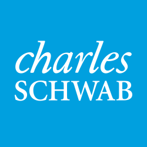

AI tax platform, live in production
Biweekly releases, zero-drama deploys
AI Tax Document Platform
PwC · Dallas, TX · Feb 2026 – Present
Problem: tax document processing needed AI-powered automation that stayed secure, auditable and reliable under real production load.
My role: AI .NET Engineering Lead — I lead 8 engineers across solution design, pair programming, CI/CD and cloud operations.
Azure Functions · .NET 8 · Cosmos DB · Azure DevOps · GitHub Actions · Azure OpenAI
Proprietary enterprise platform — live demo available on request.
2M+ transactions a day
99.95% uptime, design debt −35%

Enterprise Microservices Mesh
Charles Schwab · Southlake, TX · Jan 2025 – Jan 2026
Problem: three product domains needed one coherent architecture, faster diagnosis and releases that stopped slipping.
My role: Senior Technical Team Lead — owned solution architecture and coded the .NET 8 APIs and React features myself.
gRPC · AKS · OpenTelemetry · API Management · Native AOT · React.js
Proprietary enterprise platform — walkthrough available on request.
5M+ banking transactions daily
Zero P1 incidents in 20 months
Banking Transaction Platform
Bank of America · Plano, TX · Mar 2023 – Jan 2025 (hybrid)
Problem: banking services had to scale, stay available and pass identity scrutiny for 10,000+ users.
My role: Senior Technical Lead — architected the microservices, led a 6-engineer squad, and shipped React/TypeScript front ends with .NET back ends.
.NET Core · Azure · Entra ID · OAuth 2.0 · Service Bus · React · TypeScript
Proprietary enterprise platform — walkthrough available on request.
3M+ consumer records
99.8% data integrity, latency −40%
Consumer Data Platform
Equifax · Greater St. Louis · Aug 2022 – Mar 2023
Problem: consumer data had to flow across 8 services accurately, fast, and compliant — while manual ETL ate hours every week.
My role: Sr .NET Lead — built the microservices, Event Grid schemas and automation that removed 70% of manual ETL.
.NET Core · Angular · Azure SQL · Event Grid · Service Bus · SOC 2
Proprietary enterprise platform — walkthrough available on request.